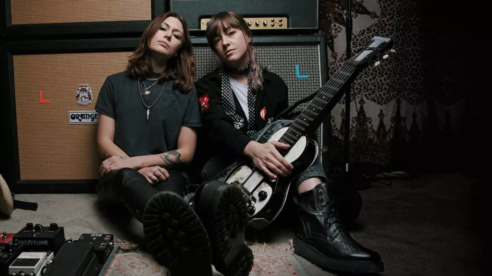

“People can weather immeasurable sorrow and hard times,
and yet we can still come out on the other side, pull ourselves together
and thrive.” – Rebecca Lovell
“Songs are there for us in all different moments of life.” – Megan Lovell

(Image credit: Future / David McClister)
Who is Larkin Poe?
Larkin Poe is an American Roots Rock band comprised of two sisters,
Megan and Rebecca Lovell.
How did they get their name?
The name Larkin Poe comes from their great-great-great-great-grandfather
who was a cousin of Edgar Allen Poe.
Albums and Achievements
The band started in Georgia in 2010 and were voted “Best Discovery of Glastonbury” in 2014 by the UK Observer.
Both sisters have toured as backing musicians for bands such as Elvis Costello, Kristian Bush of Sugarland, and Keith Urban.
From 2010 to 2013 they released five self-produced independent EPs along with two collaborative albums with Thom Well and Blair Dunlop
In 2013 they signed their first record deal with RH Music and released their first full length album called “Kin” in 2014.
In March of 2014 they lend their voices and instrumentation to “The New Basement Tapes’” alongside Marcus from Mumford & Sons, Elvis Costello, and many others.
In 2016 they reissued their album “Kin” under their own record label called “Tricki-Woo Records”, but they changed the name to “Reskinned” which included five new tracks.
This same year they also performed their song, “Trouble in Mind” on Conan and appeared in Steven Tyler’s album We’re All Somebody from Somewhere.
In 2017, they released their self-produced album called “Peach”, which was nominated for the Blues Foundation Best Emerging Artist Album in 2018.
In 2018, they released their third self-produced album called “Venom and Faith” which was nominated for a Grammy in 2020.
In 2020, they release their fourth self-produced album called “Self-Made Man” and it reached #1 on the Billboards blues album chart of the week of June 27, 2020.
In November of 2020, Larkin Poe released their fifth album, “Kindred Spirits”, a covers album featuring renditions of songs by Lenny Kravitz, Neil Young, Elvis Presley, Phil Collins, Elton John, and others.